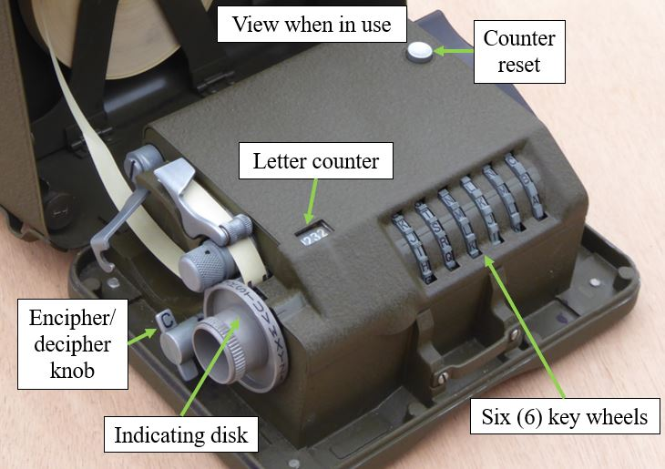
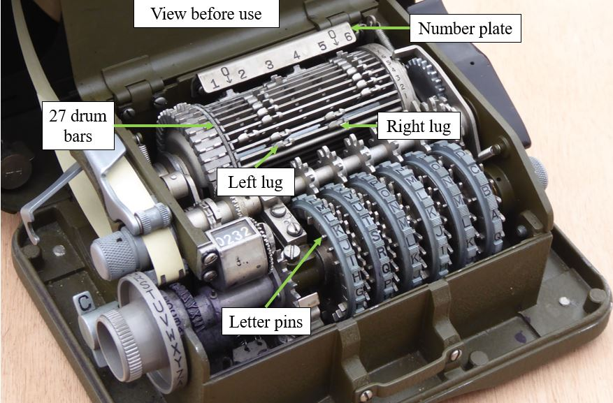
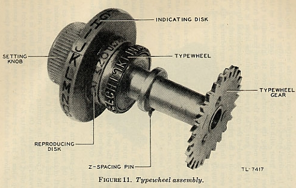
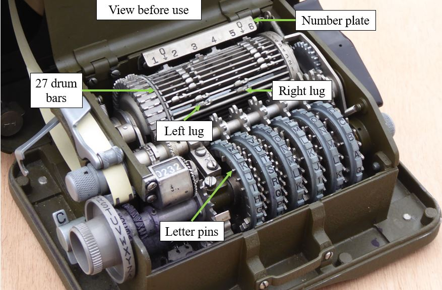
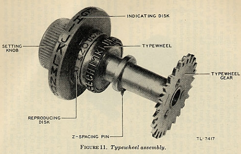

It was clear to US cryptographers well before World War II that the single-stepping mechanical motion of rotor machines (e.g. the Hebern machine) could be exploited by attackers. In the case of the famous Enigma machine, these attacks were supposed to be upset by moving the rotors to random locations at the start of each new message. This, however, proved not to be secure enough, and German Enigma messages were frequently broken by cryptanalysis during World War II.
William Friedman, director of the US Army's Signals Intelligence Service, devised a system to correct for this attack by truly randomizing the motion of the rotors. His modification consisted of a paper tape reader from a teletype machine attached to a small device with metal "feelers" positioned to pass electricity through the holes. When a letter was pressed on the keyboard the signal would be sent through the rotors as it was in the Enigma, producing an encrypted version. In addition, the current would also flow through the paper tape attachment, and any holes in the tape at its current location would cause the corresponding rotor to turn, and then advance the paper tape one position. In comparison, the Enigma rotated its rotors one position with each key press, a much less random movement. The resulting design went into limited production as the M-134, and its message settings included the position of the tape and the settings of a plugboard that indicated which line of holes on the tape controlled which rotors. However, there were problems using fragile paper tapes under field conditions.
SIGABA is described in U.S. Patent 6,175,625, filed in 1944 but not issued until 2001.
Friedman's associate, Frank Rowlett, then came up with a different way to advance the rotors, using another set of rotors. In Rowlett's design, each rotor must be constructed such that between one and four output signals were generated, advancing one or more of the rotors (rotors normally have one output for every input). There was little money for encryption development in the US before the war, so Friedman and Rowlett built a series of "add on" devices called the SIGGOO (or M-229) that were used with the existing M-134s in place of the paper tape reader. These were external boxes containing a three rotor setup in which five of the inputs were live, as if someone had pressed five keys at the same time on an Enigma, and the outputs were "gathered up" into five groups as well — that is all the letters from A to E would be wired together for instance. That way the five signals on the input side would be randomized through the rotors, and come out the far side with power in one of five lines. Now the movement of the rotors could be controlled with a day code, and the paper tape was eliminated. They referred to the combination of machines as the M-134-C.
In 1935 they showed their work to Joseph Wenger, a cryptographer in the OP-20-G section of the U.S. Navy. He found little interest for it in the Navy until early 1937, when he showed it to Commander Laurance Safford, Friedman's counterpart in the Office of Naval Intelligence. He immediately saw the potential of the machine, and he and Commander Seiler then added a number of features to make the machine easier to build, resulting in the Electric Code Machine Mark II (or ECM Mark II), which the navy then produced as the CSP-889 (or 888).
Oddly, the Army was unaware of either the changes or the mass production of the system, but were "let in" on the secret in early 1940. In 1941 the Army and Navy joined in a joint cryptographic system, based on the machine. The Army then started using it as the SIGABA.
On 26 June 1942, the Army and Navy agreed not to allow SIGABA machines to be placed in foreign territory except where armed American personnel were able to protect the machine.[1] The SIGABA would be made available to another Allied country only if personnel of that country were denied direct access to the machine or its operation by an American liaison officer who would operate it.[1]
SIGABA was similar to the Enigma in basic theory, in that it used a series of rotors to encipher every character of the plaintext into a different character of ciphertext. Unlike Enigma's three rotors however, the SIGABA included fifteen, and did not use a reflecting rotor.
The SIGABA had three banks of five rotors each; the action of two of the banks controlled the stepping of the third.
The main bank of five rotors was termed the cipher rotors, and each had 26 contacts. This acted similarly to other rotor machines, such as the Enigma; when a plaintext letter was entered, a signal would enter one side of the bank and exit the other, denoting the ciphertext letter.
The second bank of five rotors was termed the control rotors. These were also 26-contact rotors. The control rotors received four signals at each step. After passing through the control rotors, the outputs were divided into ten groups of various sizes, ranging from 1–6 wires. Each group corresponded to an input wire for the next bank of rotors.
The third bank of rotors was called the index rotors. These rotors were smaller, with only ten contacts, and did not step during the encryption. After travelling though the index rotors, one to four of five output lines would have power. These then turned the cypher rotors.
The rotors (wheels) and rotor unit
The SIGABA advanced one or more of its main rotors in a complex, pseudorandom fashion. This meant that attacks which could break other rotor machines with more simple stepping (for example, Enigma) were made much more complex. Even with the plaintext in hand, there were so many potential inputs to the encryption that it was difficult to work out the settings.
On the downside, the SIGABA was also large, heavy, expensive, difficult to operate, mechanically complex, and fragile. It was nowhere near as practical a device as the Enigma, which was smaller and lighter than the radios with which it was used. It found widespread use in the radio rooms of US Navy ships, but as a result of these practical problems the SIGABA simply couldn't be used in the field. In most theatres other systems were used instead, especially for tactical communications. One of the most famous was the use of Navajo code talkers for tactical field communications in the Pacific Theater. In other theatres, less secure, but smaller, lighter, and sturdier machines were used, such as the M-209. SIGABA, impressive as it was, was overkill for tactical communications. This said, new speculative evidence emerged more recently that the M-209 code was broken by German cryptanalysts during World War II. [2]
Although the SIGABA was extremely secure, the US continued to upgrade its capability throughout the war, for fear of the Axis cryptanalytic ability to break SIGABA's code. When the German's ENIGMA messages and Japan's Type B Cipher Machine were broken, the messages were closely scrutinized for signs that Axis forces were able to read the US cryptography codes. Axis prisoners of war (POWs) were also interrogated with the goal of finding evidence that US cryptography had been broken. However, both the Germans and Japanese were not making any progress in breaking the SIGABA code. A decrypted JN-A-20 message, dated 24 January 1942, sent from the naval attaché in Berlin to vice chief of Japanese Naval General Staff in Tokyo stated that “joint Jap[anese]-German cryptanalytical efforts” to be “highly satisfactory,” since the “German[s] have exhibited commendable ingenuity and recently experienced some success on English Navy systems,” but are “encountering difficulty in establishing successful techniques of attack on ‘enemy’ code setup.” In another decrypted JN-A-20 message, the Germans admitted that their progress in breaking US communications was unsatisfactory. The Japanese also admitted in their own communications that they had made no real progress against the American cipher system. In September 1944, when the Allies were advancing steadily on the Western front, the war diary of the German Signal Intelligence Group recorded: "U.S. 5-letter traffic: Work discontinued as unprofitable at this time".[3]




